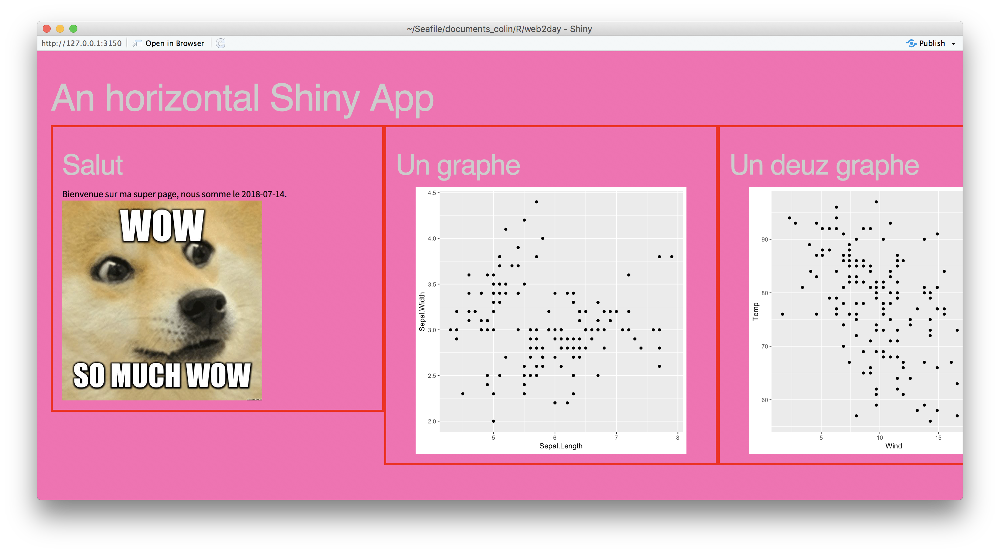

[Web2Day] Producing web content with R
Earlier this week, my talk at the Web2Day conference was put online. Here is an english summary for those who don’t understand french :)
Disclaimer: this talk has been given during a conference about web technologies. In other word,in front of a crowd that has never / hardly heard about R before. If you’re already familiar with R, Rmarkdown, Shiny and {plumber}, you won’t find anything groundbreaking here.
The video
If ever you understand french, here is the video:
Note: the title of the conference can be translated “When a data science language produces web content.”
Doing web content with R

What is R?
The introduction of the talk is about “what is R?”. I won’t redo this introduction here, as there are a lot of resources available online to discover R (and I’m pretty sure that if you’re here, you already know R ;) ):
Why doing web content with R?
There are many reasons why you would want to produce web content with R:
-
You need to communicate your results
-
You need to visualise your results dynamically
-
You need to share R content with others other the internet
-
You want to make R available through a user interface, so that people can get the full potential of R without writing any line of code
Why doing R with a web technology?
-
Use R computation performances
-
Call / use the latest datascience methods from a webpage
How?
Easy to produce webpages with markdown
With Rmarkdown, you can produce a web page that contains the results of your experiment / research / data collection / visualisation, done in R.
Markdown is an easy to use, simplified version of html which can be compiled as html. Meaning that you can use any html, css or JavaScript content. For example, a table can be converted as a JS datatable, which is dynamic.
Here is an example of a webpage created with R:
- http://random.colinfay.me/markdown.html
- https://github.com/ColinFay/conf/blob/master/2018-06-Web2Day-Nantes/markdown.Rmd (the code that produces this page)
Nothing fancy here, but you got the idea.
Read more about Rmarkdown at https://rmarkdown.rstudio.com/
An API with {plumber}
{plumber} is an R package that can creates API, that is to say a web-service that runs R, and that you can access through an URL. This URL has endpoints, and when you send information to these endpoints, an R function is executed, with the params given to the API.

One you’ve got this url, it can be integrated simply to any webpage. For example, if my API, at http://127.0.0.1:3953, produces a plot, I can do :
<!DOCTYPE html>
<html>
<body>
<h1>Yihaaa </h1>
<h2>Ce graphe est généré par R et c'est de la balle.</h2>
<img src = "http://127.0.0.1:3953/whoplot">
</body>
</html>
As {plumber}, by default, produces JSON content (but you can pass a lot of other types of content), if can be easily integrated into any web page. That means you can make R do all the heavy computation, and just get the result as a JSON to be integrated on your webpage.
- The API definition : https://github.com/ColinFay/conf/blob/master/2018-06-Web2Day-Nantes/api.R
- Launching the API : https://github.com/ColinFay/conf/blob/master/2018-06-Web2Day-Nantes/api.Rmd
About Shiny
Using Shiny to produce web app
Shiny is an amazing framework from RStudio, used to produce web app that can run R, written with R code: meaning that it can run any R model, use any R dataviz library, take advantage of R file importing packages, etc etc.
Creating Shiny apps has been one of our main area of work at ThinkR lately, and we’ve build quite large applications that run complex model, which are then visualised in the same app. What’s the point of this app? To give access to these models to people who don’t know how to code (and don’t want to).
Basic Shiny Designs
When designing a Shiny app, you can use a lot of already implemented design libraries and templates. These produce nice results, and everything can be written in R, which makes it easy to use for R developers who don’t know html, css and JS (even if we can definitely say that when it comes to building large applications, you should at some point learn at least html and css).
These basics packages produce contents like the one I’m showing in the talk:

Here, I’m creating a little dashboard that connects to Twitter, and does simple dataviz, counting, and text-mining. Everything, here, done in R.
Note: this app will be made open-source one day, when I’ll have found some times to finish it :)
Advanced Shiny design
Or, what I call: Webdev + R = ❤️
When doing more advanced Shiny designs, we can use htmlTemplates (a feature which is not known enough). This functionnality allows you to create html and css templates as any web developer would do. And of course, with JS in it if you want to.
Once you’ve got this template, you can use it straight in Shiny.
For example:
# styles.css
body {
font-family: 'Source Sans
Pro', Helvetica, sans-serif;
background: #121212;
color: #999;
padding: 20px;
}
tr {
vertical-align: top;
}
...
These html and css templates are “easy” (well, relatively easy) to implement if you’re a web designer. But, let’s be honnest, they are really hard to code if you’re a data scientist.
From the R point of view, this is as simple as creating a function that does:
horizontalBox <- function(title, content){
htmlTemplate("box.html", title = title, content = content)
}
You can recognize here that I am calling the box.html template, with the arguments of the function being the elements between {.

Might we work together?
I am not a web designer, and web designers are not data scientists, so neither of us can pretend to do a better job than the other. But the good news is that everything is there for us to work together.
So, if ever some web designer is interested to work with me on a Shiny app (everything open source of course), I’ll be glad to do so, as I’m sure we have a lot to learn from each other.
Feel free to out to me throught mail or on twitter!
Slides
The slides from the talk are available here:
https://github.com/ColinFay/conf/blob/master/2018-06-Web2Day-Nantes/web2day.pdf
The content of the .R, Rmd, etc, are here:
https://github.com/ColinFay/conf/tree/master/2018-06-Web2Day-Nantes